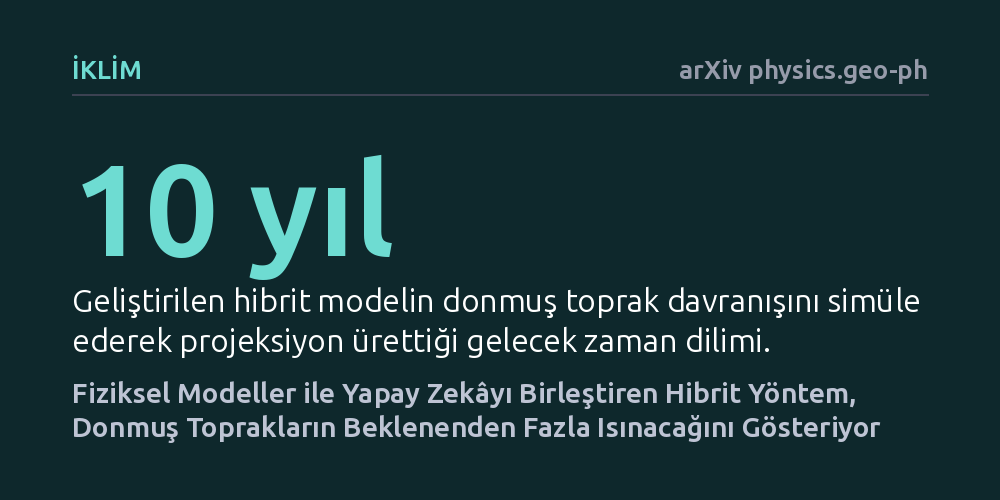

IKLIM · arXiv physics.geo-ph · 2026-10-21
Araştırmacılar, yüksek hesaplama maliyetlerini aşarak donmuş toprakların iklim tepkilerini öngörmek amacıyla fiziksel simülasyonları yapay zekâyla birleştirdi. Geliştirilen hibrit model hem hesaplama doğruluğunu korudu hem de donmuş toprak tabakasının önümüzdeki on yılda beklenenden daha fazla ısınacağını ortaya koydu.
Donmuş toprakların beklenenden hızlı ısınması, yer altında hapsolmuş sera gazlarının atmosfere tahmin edilenden çok daha erken salınarak iklim krizini hızlandırabileceğini gösterir.

Kuzey yarımkürenin kutba yakın geniş kara parçalarını kaplayan ve binlerce yıldır donmuş halde kalan toprak tabakası, devasa miktarda organik karbonu bünyesinde hapsediyor. Küresel ısınmanın etkisiyle bu donmuş zemin erimeye başladığında, toprak altındaki mikroorganizmalar harekete geçerek karbondioksit ve metan gibi sera gazlarını atmosfere salma tehlikesi taşıyor. Bu durum, ısınmanın yeni ısınmaları tetiklediği geri beslemeli bir zincirleme reaksiyon başlatabilir.
Ancak yer altındaki su sızıntılarını, buz erimelerini ve ısı transferini gerçeğe yakın hesaplamak devasa süper bilgisayarlara ve haftalar süren simülasyonlara ihtiyaç duyuyor. Bu yüksek hesaplama süreleri ve yüksek enerji maliyetleri, farklı iklim senaryolarını uzun vadede ve esnek biçimde test etmeyi son derece zorlaştırıyor. Bilim insanları uzun süredir doğa yasalarından ödün vermeden bu hesaplama yükünü hafifletecek pratik bir yol arıyordu.
Araştırma ekibi, sürekli donmuş zemin kuşağında yer alan ormanlık bir araştırma sahasındaki toprak sıcaklığı profillerini ve su hareketlerini temel aldı. İlk aşamada, yer altındaki enerji ve nem transferini taklit eden fizik temelli kapsamlı bir kriyohidrojeolojik simülasyon kuruldu ve yüksek başarımlı bilgisayarlarda çalıştırıldı. Elde edilen sayısal sonuçların arazide ölçülen gerçek sıcaklık ve su sızma dinamikleriyle örtüştüğü doğrulandı.
Ardından, bu simülasyonu uzun vadeli projeksiyonlarda çalışabilecek kadar hızlandırmak için spektral yapay sinir ağlarına dayanan bir vekil model geliştirildi. Üstelik bu yapay zekâ modeli sadece simülasyon verileriyle yetinmeyip doğrudan deneysel ölçüm verilerini de bünyesine katan hibrit bir yapıya dönüştürüldü. Böylece hem fiziksel süreçlerin kurallarını gözeten hem de yapay zekânın işlem hızını arkasına alan dengeli bir modelleme çatısı kuruldu.
Dinamik yapay zekâ modellerinin zaman ilerledikçe biriken hatalar yüzünden kararsızlaşması ve mantıksız sonuçlar üretmesi iklim modellemesindeki en büyük risklerden biridir. Geliştirilen hibrit modelin, uzun süreli zaman entegrasyonlarında dahi dengesini koruduğu ve doğrulama amacıyla ayrılan bağımsız ölçüm setlerine karşı klasik simülasyonlara kıyasla çok daha yüksek bir tahmin doğruluğuna ulaştığı görüldü.
Elde edilen güvenilir model, Birleşmiş Milletler Hükümetlerarası İklim Değişikliği Paneli'nin güncel iklim senaryoları (CMIP6) ile birleştirilerek önümüzdeki on yıla ilişkin projeksiyonlar yapıldı. Analiz sonuçları, donmuş toprak tabakasındaki sıcaklık artışının mevcut iklim modellerinin tahmin ettiğinden daha yüksek olacağını ve zemin çözülmesinin beklenenden hızlı ilerleyebileceğini ortaya koydu.
Bu bulgular, yapay zekânın iklim biliminde sadece hesaplamaları hızlandıran bir araç olmadığını, fizik kurallarıyla deneysel verileri bir araya getirerek simülasyon hassasiyetini bizzat yükseltebileceğini gösteriyor. Enerji ve zaman maliyeti düşen bu tür vekil modeller sayesinde, donmuş toprakların küresel ölçekteki iklim modellerine çok daha ayrıntılı biçimde dahil edilmesi mümkün hale gelebilir.
Yine de elde edilen sonuçları değerlendirirken temkinli olmak gerekir. Zira çalışma henüz tek bir ormanlık araştırma sahasının verilerine dayanıyor ve donmuş toprakların küresel ölçekteki karmaşık çeşitliliğini tam olarak yansıtmayabilir. Beklenenden yüksek sıcaklık artışı işaretinin, farklı coğrafi bölgelerde yapılacak bağımsız testlerle teyit edilmesi gerekmektedir.